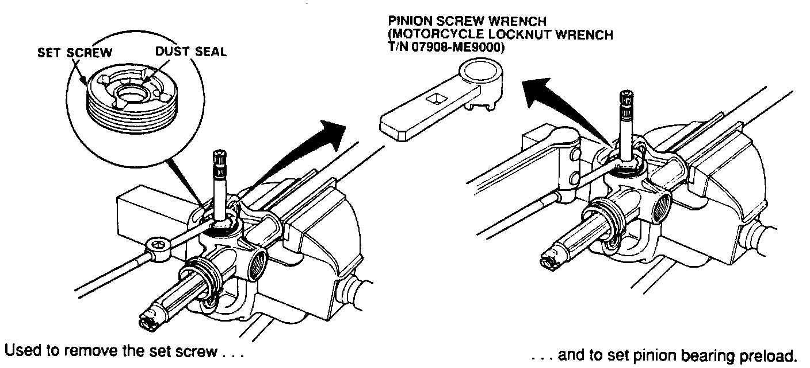

Wrench For Set Screw On Steering Pinion Shaft (Manual Steering)

We've substituted an existing motorcycle locknut wrench (T/N 07908-ME90000) for the pinion screw wrench (T/N 07MAA-SLOO40A) shown in the Service Manual. The substitute wrench was automatically shipped to all Acura dealers.
This wrench is used to remove and install the set screw (collar) on the pinion shaft of an NSX manual steering gearbox. It's also used in combination with a torque wrench to set the pinion bearing preload. Cross out 07MAA-SLOO40A and write in "Locknut Wrench 07908-ME90000" on the following pages:
[ ] page 17-2, Ref. No. 5.
[ ] page 17-23, picture in step 8.
[ ] page 17-26, pictures in steps 17 and 19.
[ ] page 17-27, picture in step 20